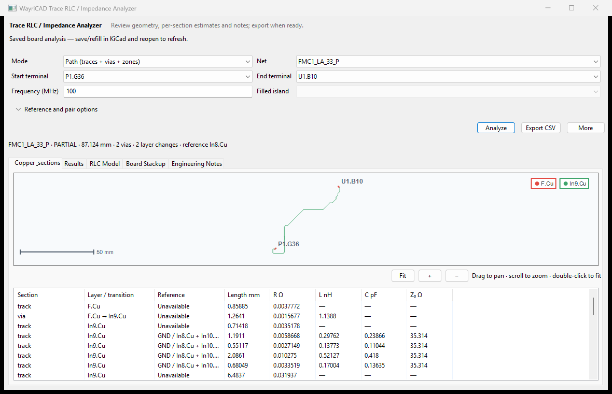

Measures routed geometry between selected pads and provides first-order RLC and characteristic-impedance estimates.

Auto-refresh follows selected PCB pads/tracks. All stackup rows are read from KiCad metadata or parsed from the board file when KiCad's SWIG stackup object is opaque.
| Quantity | Approximation |
|---|---|
| Resistance | R = rho*l/(w*t) using measured length/width and copper thickness. |
| Capacitance per length | C' = epsilon0*Er*w/h. |
| Inductance per length | L' = mu0*h/w. |
| Characteristic impedance | Z0 = sqrt(L'/C'). |
h is the dielectric separation from each routed layer to the selected reference layer. The result records reference layer, stackup source, h, Er, and copper thickness. When a start/end path cannot be resolved, notes clearly identify aggregate-net fallback.
Use for route audits, relative comparisons, and early estimates on conventional PCB traces with a known stackup and continuous reference plane.
This is not a field solver. It omits solder mask, copper roughness, trapezoidal etch, dispersion/loss, complete via/package models, plane splits, nearby copper, and connector discontinuities. Validate critical high-speed, RF, power-integrity, and controlled-impedance interfaces using a field solver, SI simulation, TDR, or measurement.